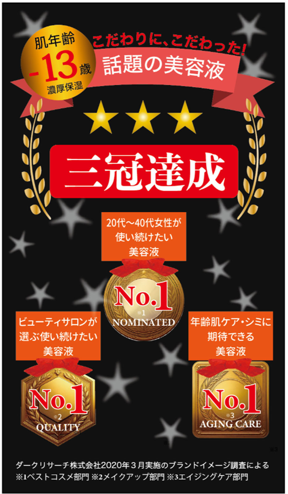

ダークパターン事例⑭ No.1表示/高満足度
商品等の売上や性能に関するランキング1位の表示や、高い満足度の表示があるもの
【例】
- 「シミに期待できる美容液No.1」と記載しつつ、ただし書として「ブランドのイメージ調査による」という表示をしており、実際の使用感ではなく、イメージ調査に基づく結果である。そして、そのただし書は、「三冠達成」の強調表示に比べて文字が小さく目立たない。

商品の性能評価に見える「No.1」を大きく示し、実際はイメージ調査であることを小さく置いた広告です。
example-cosme.jp/ranking
三冠達成
シミに期待できる美容液 No.1
満足度 98%
※ブランドのイメージ調査。20〜60代女性100名、2026年8月、当社調べ。
何を調べた順位かを見出しと同じ場所で明示し、調査方法も確認できる改善例です。
example-cosme.jp/research
ブランドイメージ調査で1位
20〜60代女性100名に、ブランド名と広告画像を見せて回答を得た調査です。
調査概要
実施: 2026年8月 / 対象: 100名 / 比較: 5ブランド / 質問: 期待感に関する印象
解説
「No.1」の対象がイメージなのに、効果・売上・満足度の順位のように見せると、調査結果の意味を誤解させます。
改善例では「ブランドイメージ調査」と主表示に含め、何の順位ではないかも説明します。対象者数、比較対象、実施時期、質問内容へすぐアクセスできるようにします。